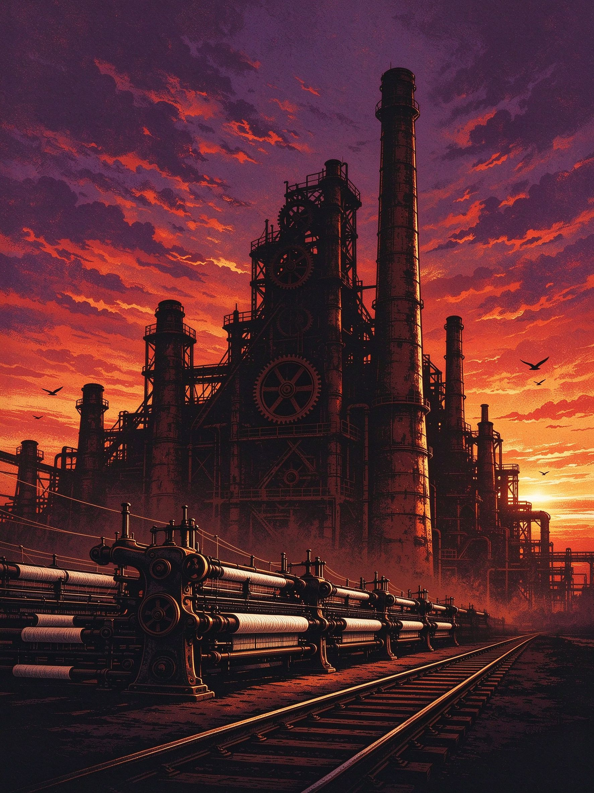
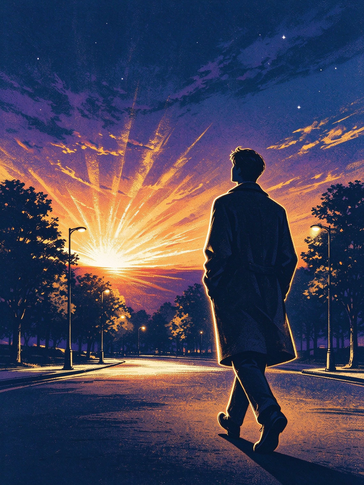

ACT Ⅰ / 时代
旧世界的落幕
老旧工厂群剪影、烟囱齿轮、铁轨、暮色晚霞与一线晨光。旧的形态正在退场，新的可能已经在地平线上。
历史的更替 · 人民的力量 · 理想的延续
点击下方流麻，翻转它——沙落字现，回响开始
THE TRIPTYCH
三块流麻，三段历史回响。点击任意一块，细沙沉降、画面翻转，诗句与原理在沙落之后显现。

ACT Ⅰ / 时代
老旧工厂群剪影、烟囱齿轮、铁轨、暮色晚霞与一线晨光。旧的形态正在退场，新的可能已经在地平线上。
ACT Ⅱ / 人民
纺织女工、工人、农民群像，车间与麦田交织，暖金逆光。历史从来不是少数人的传记，而是千万人的日常。

ACT Ⅲ / 未来
青年背影走过黑夜走向黎明，路灯与树影拉出纵深，霞光展开成扇面。路是曲折的，方向是向前的。
CRAFT PIPELINE
从打印到封孔，八步做完一块；三块成组，才是「三联」。
STEP 01
按内页尺寸等比打印画面层与文字层，300 dpi，光面相纸或硫酸纸更通透。
STEP 02
画面层贴前板内侧；文字层按排版覆于其上，或贴背板内侧，做出翻转后字现的层次。
STEP 03
前板 + 内页 + 背板合拢，四周先预固定，别急着上胶。
STEP 04
注射器从注油孔注入流沙液至 85%–90%，按该联配色加闪粉，先少后多。
STEP 05
留一小截空气，倾斜翻转让气泡聚到孔口，用气泡针排掉。
STEP 06
UV 胶封注油孔，静置固化；两次封口、过夜再翻转最稳。
STEP 07
翻转 20 次：流沙顺畅、无漏油、文字始终清晰可见。
STEP 08
三块装上展示架，配总主题说明牌，实物才成立。
COST × IMPACT
横轴是学习与实现成本，纵轴是视觉冲击力。两周工期里，最优解不在右上角。
坐标为方案评估示意值（非实测数据），金色为最终选用的组合。
TECH MATRIX
四种媒介同屏是加分项，但 AI 镜头控制在 30% 以内——原理口播才是得分大头。
原理动画主干。已熟练的管线，负责讲清「生产力—生产关系」这类抽象关系。
主干 · 已掌握现实案例镜头。算力中心、流水线、数字劳动场景，1–2 天出素材，效率远高于建模。
补真实感 · ≤30% 时长理论讲解段。几分钟生成「虚拟主播讲原理」，与三维段落交替，避免全片同质。
低成本 · 1 天开头与结尾的温度镜头。队友做的手工是实拍素材，也是本项目的实物本体。
情感落点MARXIST PERSPECTIVE
画面如何印证马克思主义基本原理——每一块流麻，都是一次从现象到原理的观看。
REFERENCE
同为「AI + 思政」的成品，以及拿一等奖的真人微电影——后者往往技术含量更低，说明叙事大于特效。
SCHEDULE
2026-10-26 至 2026-11-08，两周五个阶段。
10.26 – 10.28
定方案 · 采购 · 打印
全组
10.29 – 11.01
制作三块流麻 + 文字层 + 组合
队友手工为主 · 本人指导
11.02 – 11.04
拍摄过程 · 写创作说明
本人
11.05 – 11.06
成品检验 · 装架 · 简介终稿
全组
11.07 – 11.08
提交实物 + 照片 + 说明
全组
DEFENCE
四个最可能被追问的点，答案先写在这里。
AI 是执行工具。选题、三章结构、画面里的叙事要素、诗句立意、流麻的交互与工艺，都是团队原创设计；AI 只承担「把已定的画面画出来」这一步。答辩时附提示词与制作过程照片佐证。
区别在「观看需要动作」。静止的画只能看，流麻要翻转——沙落、字现，观众必须参与一次「历史流动」的模拟。这是隐喻，不是装饰。
它们构成历史唯物主义的主干逻辑链：规律（社会基本矛盾）→ 主体（人民群众）→ 趋势（前进性与曲折性）。三块流麻正好一一对应，不是凑数。
本轮作业可选实物作品，且实物能规避「念书式视频」的通病：一件能被把玩的作品，比一段被动观看的视频更能让人停下来。数字版用于答辩演示与传播。
本页是《落幕之后，仍有回响》的高新技术数字版：以粒子系统模拟流沙沉降，以 3D 翻转复刻流麻的交互体验。
它与团队手工制作的三联流麻实物互为表里——实物交付作品本体，数字版作为答辩演示与传播载体。